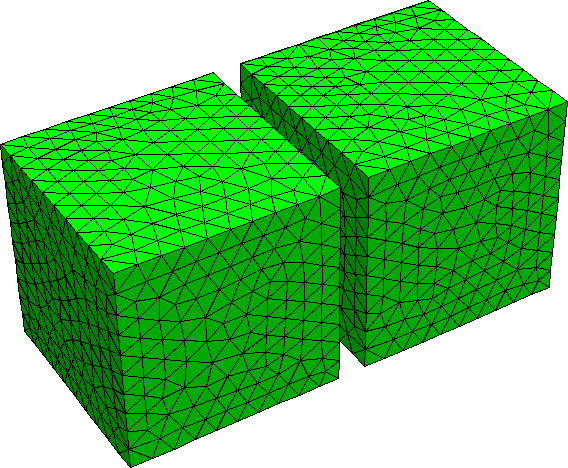
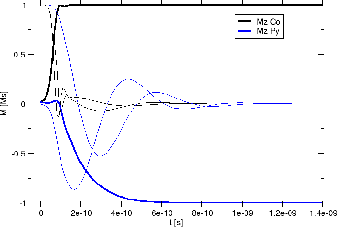
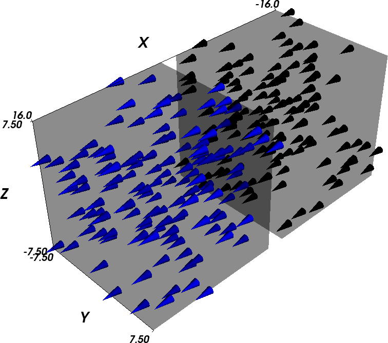
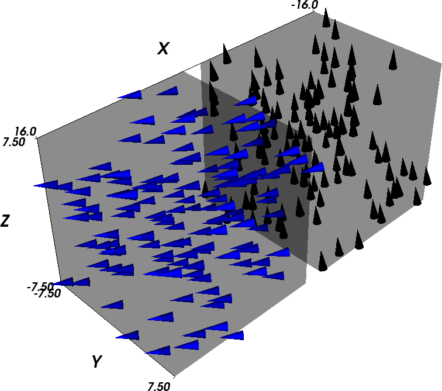
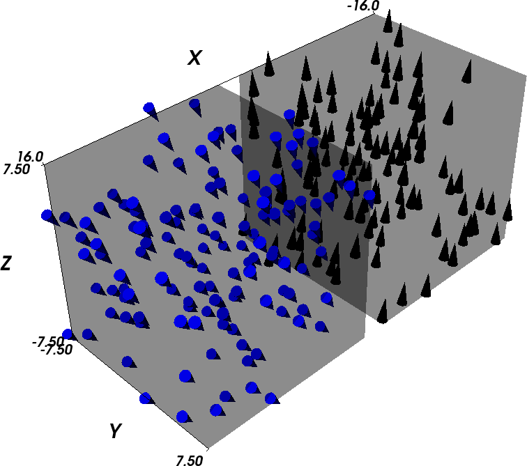
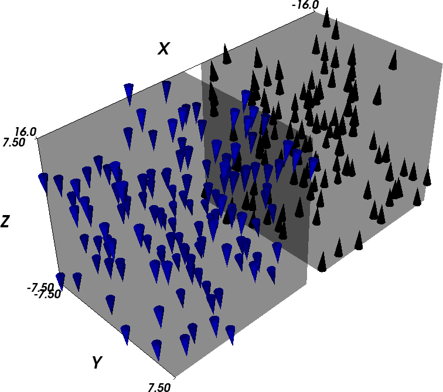

In this example, we study the dynamics of a simple system consisting of two 15 nm x 15 nm x 15 nm cubes close to one another (with 2 nm spacing along the x-axis). We take the right cube to be made of PermAlloy and the left cube to be made of Cobalt, with the magnetic anisotropy axis pointing in z-direction. The mesh has been generated with Netgen from the geometry file two_cubes.geo.
We use the two_cubes.py script to carry out the simulation:
import nmag
from nmag import SI, every, at
sim = nmag.Simulation()
# define magnetic material Cobalt (data from OOMMF materials file)
Co = nmag.MagMaterial(name="Co",
Ms=SI(1400e3, "A/m"),
exchange_coupling=SI(30e-12, "J/m"),
anisotropy=nmag.uniaxial_anisotropy(axis=[0,0,1], K1=SI(520e3, "J/m^3")))
# define magnetic material Permalley
Py = nmag.MagMaterial(name="Py",
Ms=SI(860e3,"A/m"),
exchange_coupling=SI(13.0e-12, "J/m"))
# load mesh
sim.load_mesh("two_cubes.nmesh.h5",
[("cube1", Py),("cube2", Co)],
unit_length=SI(1e-9,"m")
)
# set initial magnetisation along the
# positive x axis for both cubes, slightly off in z-direction
sim.set_m([0.999847695156, 0, 0.01745240643731])
ns = SI(1e-9, "s") # corresponds to one nanosecond
sim.relax(save = [('averages', every('time', 0.01*ns)),
('fields', every('time', 0.05*ns) | at('convergence'))])
The script is very similar to the one used in Example 2: Computing the time development of a system. However, here we have two materials. The related changes are that we define two magnetic materials, and assign them to objects Co and Py.
When loading the mesh:
sim.load_mesh("two_cubes.nmesh.h5",
[("cube1", Py),("cube2", Co)],
unit_length=SI(1e-9,"m")
)
we need to assign regions 1 and 2 in the mesh file (which correspond to the two cubes) to the materials. This is done with this list of tuples:
[("cube1", Py),("cube2", Co)]
The first list entry is ("cube1", Py) and tells nmag that we would like to refer to the region 1 as cube1, and that we would like to assign the material Py to this region. This entry refers to region 1 because it is the first entry in the list.
The second list entry is ("cube2", Co) and tells nmag that we would like to refer to the region 2 as cube2, and that we would like to assign the material Co to this region.
If there was a region 3 in the mesh file, we would add a third list entry, for example (“cylinder”,Co) for a Co cylinder.
Note that at this stage of nmag, the region name (such as cube1, cube2, etc) are not used in the simulation, apart from diagnostic purposes in progress messages.
Physically, what happens in this system is that the magnetisation of the Cobalt cube aligns rather fast with the anisotropy direction and then slowly forces the magnetisation of the PermAlloy cube into the opposite direction (through the action of the stray field) to minimise total energy of the configuration.
The Initial magnetisation is taken to point in x-direction. As this is an unstable equilibrium direction for the magnetisation anisotropy of the Cobalt cube, we slightly distort the initial magnetisation by adding a tiny component in +z-direction.
It is instructive to compare the Fields and Subfields for this particular example with the list of fields and subfields for a single-material simulation. In effect, all the fields that are related to the properties of some particular magnetic component carry multiple subfields. In particular, there is only one H_ext field, as the externally applied field is experienced in the same way by all materials, but the M*H energy density associated with H_ext has a dependency on the magnetic component (through M), so we have two subfields E_ext_Py and E_ext_Co in the field E_ext.
The situation is virtually identical with H_demag/E_demag and the related charge density rho and magnetic scalar potential phi. All the other relevant fields in this example turn out to be related to a particular magnetic component.
| Field | Subfield(s) | Comment |
|---|---|---|
| m | m_Py, m_Co | normalised magnetisation |
| M | M_Py, M_Co | magnetisation |
| H_total | H_total_Py, H_total_Co | total effective field |
| H_ext | H_ext | external (applied) field (only one) |
| E_ext | E_ext_Py, E_ext_Co | energy density of Py due to external field |
| H_anis | H_anis_Py, H_anis_Co | crystal anisotropy field |
| E_anis | E_anis_Py, E_anis_Co | crystal anisotropy energy density |
| H_exch | H_exch_Py, H_exch_Co | exchange field |
| E_exch | E_exch_Py, E_exch_Co | exchange energy |
| H_demag | H_demag | demagnetisation field (only one) |
| E_demag | E_demag_Py, E_demag_Co | demagnetisation field energy density |
| phi | phi | scalar potential for H_demag |
| rho | rho | magnetic charge density (div M) |
| H_total | H_total_Py, H_total_Co | total effective field |
The issue of multiple magnetic components becomes much more interesting when we study multi-component alloys, i.e. if we associate more than one type of magnetisation to a single region in the mesh. Usually, we will then also have to introduce some “generalized anisotropy energy” term of the form E=c*M_a*M_b that depends on more than a single magnetisation subfield (see More than one magnetic material, exchange coupled).
Once we have run the simulation using:
nsim two_cubes.py
we can analyse the results. For example, we can plot the magnetisation of the two materials against time:
The blue lines represent the (soft) permalloy and the black lines show the (hard) cobalt. Each thick line denotes the z-component of the corresponding material.
This plot has been created with the following command:
ncol two_cubes 0 m_Co_0 m_Co_1 m_Co_2 m_Py_0 m_Py_1 m_Py_2 | xmgrace -nxy -
We can further convert the field data into vtk files:
nmagpp --vtk=two_cubes.vtk two_cubes_dat.h5
and visualise their content. We start with the initial configuration (Permalloy in blue on the left, Cobalt in black on the right, only 10 percent of the actual magnetisation vectors on the mesh nodes are shown to improve the readability of the plots):
Time T=0 ps:
Time T=1e-10s=0.1ns: Cobalt is already pointing up, i.e. in the direction of the anisotropy axis, while Permalloy has just started to rotate.
Time T=0.3ns: Cobalt has reached its final configuration (pointing up) and Permalloy is still rotating, but already pointing down (to minimise the interaction energy between the cubes to the demagnetisation stray fields).
Time T=1 ns: The final configuration has been reached.
